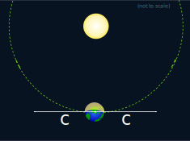
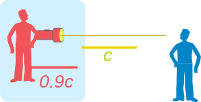
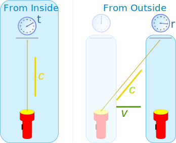
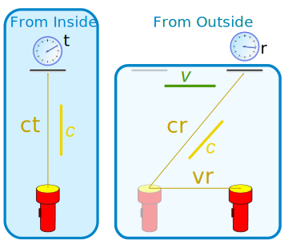
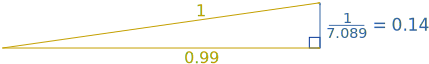
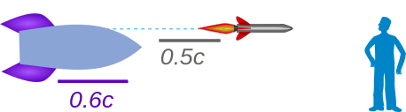

Relativity Introduction
First, a little story:
Alex and Sam are two immortal super-beings
Alex: Hey Sam, I am going to create an elegant Universe.
Sam: Sounds cool. How does it begin?
Alex: I will make it expand from a point.
Sam: So ... two types of point then? One central point and all the other points? Not very elegant. And does it expand into already created space?
Alex: Darn.
(...some time later...)
Alex: Hey Sam, I've figured it out. It is space itself that will expand.
Sam: Right, so everything just gets pulled apart, and all points have the same properties.
Alex: Yes. And things can move around inside the space making wonderful patterns.
Sam: And this all happens instantly?
Alex: I thought about that. I will set a maximum speed inside space. And time will just happen. It is going to be cool.
Now, let's learn about our (real) Universe!
Relative
There is no "central reference point" in the Universe. So we can only measure speed relative to us or something else.
Example: when we say a car is going 100 km/h (about 60 mph) we mean relative to the ground
But think about this:
- The Earth spins on its axis at 1670 km/h at the equator
- The Earth orbits the Sun at 30 km/s
- The Sun moves around the Galaxy at 220 km/s
- Our Galaxy is moving relative to local galaxies at about 300 km/s
But we don't notice any of that.
We only notice relative speeds.
Example: you are in a moving Train.
Have a game of table tennis!
The ball bounces back and forth just like you were at home.
If there were no windows, and the train was running on a smooth track there is actually no way you could tell how fast you were going in relation to the ground.
The laws of Physics are not affected by your speed.
(Imagine how weird it would be if light, electricity, magnetism behaved differently at different speeds!)
Speed of Light
Light travels at almost 300,000,000 meters per second (to be exact: 299,792,458 meters per second) in a vacuum. That speed is called c.
c = speed of light in a vacuum
And c is the same in all directions!

The Michelson–Morley experiment in 1887 measured the speed of light "forward" and "backward" of Earth's orbit and found no difference. Despite Earth moving quite fast through space.
It was a surprise at the time.
So the speed of light is constant and is not affected by any relative speed.
c is the same for all observers, independent of the motion of the source!
So, if I zoom towards you at 0.9c and shine a light ahead of me:

- I will see the light moving at c
- You will also see the light moving at c (not 1.9c)
You might think we should add c and 0.9c together to get 1.9c, but the Universe does not work like that. Many, many experiments have proven that.
(We are talking speed here, no acceleration. Technically it is called an "inertial frame".)
A Moving Box
To learn how this works, imagine you are inside a moving box.
You measure the time it takes light to go from a torch to a detector, and get the answer t

But the box is moving past someone else at speed v. They also measures how long the light takes.
They see the light take a longer (slanted) path, BUT it still travels at the speed of light, so it must take more time, and they measure time r
- t is the time for you, the inside observer
- r is the time for them, the outside observer
That is the key point. Having c the same for everyone means that time can be different.
Having accepted this, let us do some mathematics! What are the distances?
- The distance for the inside observer is the time t by the speed of light: ct
- The distance for the outside observer is the time r by the speed of light: cr
- And the outside observer sees the box move this far: vr
So these are the distances:

Which we can put into one diagram like this:

It is a right-angled triangle that we can solve using Pythagoras formula:
So now we can calculate how much time for an outside observer (r) compared to an inside observer (t).
That last term is so important it gets called gamma (the Greek letter γ) or "the Lorentz factor":
γ = 1√(1−v2/c2)
That increase in time that an outside observer experiences is called "Time Dilation", dilation means getting larger.
Gamma Examples
Here are some γ values for different speeds (you can do the calculations yourself, but will need the Full Precision Calculator):
Remember that c is about 300,000,000 m/s
Highway speed of 100 km/h (28 m/s): γ = 1.000 000 000 000 004 29...
There are 14 zeros in there, so almost exactly 1. That is why we never notice these time effects at the speeds we normally go at.
Jet speed of 2,000 km/h (556 m/s): γ = 1.000 000 000 001 72...
So even at jet speed there are 11 zeros in there.
GPS satellite orbit speed of 14,000 km/h (≈4000 m/s): γ = 1.000 000 000 084 1...
Still almost exactly 1. A clock on a satellite would be affected by about:
0.0000000000841×24×60×60 = 0.000 007 seconds every day
That is 7000 nanoseconds, but GPS needs about 20 nanoseconds accuracy, so we actually need relativity calculations to make GPS work. (Note: there is also a gravity effect, but we are not looking at that here)
10% of the speed of light: γ = 1.005...
Even going at 10% the speed of light (about 100 million km/h) there is only a .005 difference
50% of the speed of light: γ = 1.155...
90% of the speed of light: γ = 2.294...
99% of the speed of light: γ = 7.089...
At 99% of the speed of light, for every day inside the box someone outside experiences a week.
In the style of the triangle we saw earlier it looks like this:

You can check for yourself: does 12 = 0.992 + 0.1412 ?
99.9% of the speed of light: γ = 22.4...
Example: Muons
Muons are special particles with a half of life of only 2.2 microseconds. Light travels only 700 meters in that time.
But we get lots of muons from the upper atmosphere, thousands of meters away!
Why?
Because they are moving so close to the speed of light that gamma is about 20
So for them 2 microseconds have passed, but as outside observers we see about 40 microseconds passing, which is enough time for them to go about 14,000 m
Another demonstration of relativity.
Adding and Subtracting Relative Velocities
So, how do we add velocities, then?
For speeds that we normally experience it is OK to just add them, you won't notice anything wrong.
But for very fast speeds we need to think of relativity.
In the case of velocities heading in the same direction we can use this fomula:
vnew = v1 + v21 + v1v2/c2
Example: A spaceship going at 0.6c launches a rocket (relative to it) at 0.5c, what does an outside observer see?

Let's use the formula above:
vnew = 0.6 + 0.51 + 0.6×0.5/12
vnew = 1.11 + 0.3
vnew = 0.846...
The two speeds combine to make 85% of the speed of light. Neat, huh?
Example: Earlier we looked at this:
What does happen when we add 0.9c to c?
Let's use the formula above:
vnew = 0.9 + 11 + 0.9×1/12
vnew = 1.91 + 0.9
vnew = 1
So the outside observer sees the combined speed of 0.9c and c as exactly c
So we never get above c
Mysterious?
This may seem strange, but not really mysterious. It is just a direct result of the speed of light being a constant for all observers.
The strangeness is likely because in our everyday world we never have to deal with it. Maybe if the speed of light was only 100 km/h we would have a better "feel" for it?
Footnotes
That was an introduction into "Special Relativity" which does not include any effects of acceleration or gravity.
Albert Einstein released his special theory of relativity in 1905, but it took until 1915 for him to release his general theory of relativity that does include the effects of gravity.
Note also that when we mention the speed of light, or c, please remember:
Light only travels that speed in a vacuum!
It can travel slower, read more at Light.
And even though it is called the speed of light, it applies to the whole Electromagnetic Spectrum, Gravity Waves and more (basically any particle without mass).
And remember: we all experience the same laws of physics.
Faster than c?
Space can expand faster than c, but as far as we know no wave/particle can go faster than c.
Except for this fictional lady:
There was a young lady named Bright
who traveled much faster than light.
She set out one day
in a relative way,
and came back the previous night.